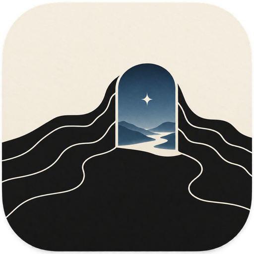

Write today
Begin or resume today’s dated draft in one step. Gentle goals and writing rhythm make consistency visible without punishing a missed day.
A private writing studio for enormous worlds
Write a little every day.
Build something enormous.

Every world begins with a door.
The daily ritual
Ministry of Elsewhere gives you one calm place to write a small daily draft, tend the lore behind it, and shape those fragments into a novel.
No cloud account. No proprietary manuscript vault. Your worlds remain ordinary files in folders you choose.
Inside the Ministry
Begin or resume today’s dated draft in one step. Gentle goals and writing rhythm make consistency visible without punishing a missed day.
Keep characters, places, technology, maps, timelines, relationships, and continuity evidence connected to the prose that made them matter.
Arrange scenes and chapters through an outline or corkboard, split and merge safely, and keep planning notes out of the reading copy.
Compile to Markdown, plain text, EPUB, or a 6 × 9 inch print interior PDF. The source stays yours before and after export.
Local by design
The app works only with folders you choose. It does not require an account, analytics, advertising, or an internet connection. Private recovery and progress records remain on your Mac.
Development preview
Free during beta. Built for Apple Silicon Macs running macOS 13 or later.
Download for macOS Beta 1 · Apple Silicon · 8 MBSHA-256: ff646eca2f1f7413079e8bc970682d5053c301295e6594a3c6fb82d252a7f76f
What beta means